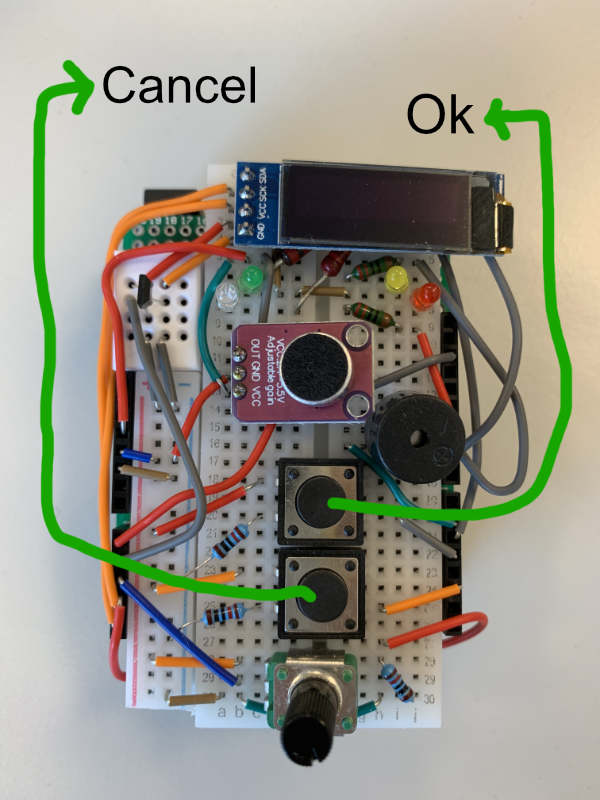

17: final task Arduino: Burglar Alarm
Since this course is, of course, going to launch your career as a highly paid software developer, you're going to need a high-tech security system for your fancy villa. Let's start by building the burglar alarm. Here's the concept:
- We fix an Arduino (with the S4D breadboard, of course) to the frame of a door.
- On the door itself, we attach a magnet. The magnet sensor on the Arduino can detect whether the door is open or closed.
A fully developed burglar alarm will have the following features:
- If the alarm is turned on, and the door is opened, the user has 20 seconds to enter a 3-digit code to disable the alarm. If that fails, the alarm will go off with lots of noise and lights.
- When the door is closed, and the alarm is turned off, the user can change the 3-digit code.
- If the door is closed, pressing the OK-button (the button closest to the display) will change the on/off state of the alarm.
- A colored LED will show the alarm's status: if it is on or off, and whether it is detecting the door being open or closed.
how to get a passing grade
Grading works a bit differently from the Battleships assignment. There are 19 tasks on this page, for which you can earn a total of 10 points. Each assignment is marked by one of these emoji: 👉 (pointing hand), 👍 (thumbs up), and 👏 (clapping hands).
| 👉 | The required tasks are marked with the pointing hand. You cannot get a passing grade if you're missing any of these tasks. Doing all of these required tasks well (see next section) can earn you 6 points. |
| 👍 | The four additional features are marked with the thumbs up emoji. Each of these can earn you an extra ½ point each. |
| 👏 | Finally, there are two general bonus tasks, marked with the clapping hands. Add a cool improvement or improve your code quality, and you can score an additional full point for each bonus assignment. |
what does it mean to do the tasks well?
- The code does what is required. It doesn't have side-effects that aren't required.
If, however, you feel like improving on the requirements and adding extra or better features, you're welcome. But your cool innovation should not be sidestepping an important programming challenge. Check with your teacher. - The following basic code quality aspects are OK:
- good names for variables and functions;
- the correct datatypes for variables, parameters and return values;
- proper indentation of code;
- no unneccessary global variables.
- The code is clearly your own code. You can share plans, ideas and hints with classmates. But don't code your solutions together and don't share code fragments.
17.0: sending in the Burglar Alarm
iSAS
Do not forget, after you've sent in your work with the usual button, to upload it into our iSAS system. See the iSAS explanation on the Battleships page.
👉 17.1: make a table (required task)
Since you're creating a large program completely from scratch, it helps to plan ahead. In this case a small table will do fine. Here's a start for your table:
| alarm is on | alarm is off | |
| door is open | Red LED is on … … | Blue LED is on … … |
| door is closed | Green LED is on … … | Yellow LED is on … … |
Re-read the list of features at the top of this page, and place those features in this table. To get you started, we have already placed feature 4 into the table.
👉 17.2: alarm on—alarm off (required task)
Whether the alarm is on or off is not determined by a sensor-value. We have to store this in a global variable. Create this variable, and give it the best name and the best datatype you can think of. In the next task, we'll change this variable when a buton is pressed.

In this assignment, we will name the buttons "OK" and "Cancel".
👉 17.3: toggling the alarm (required task)
To toggle a switch means to change it's state: if it's on, it becomes off, and if it's off, it becomes on. We also use the word with boolean variables. What logical operator can be used to toggle a boolean variable?
Create a function that, when called, toggles the alarm's on/off state.
Then change your program to call the function when the OK-button (see picture) is pressed. Make sure that pressing and releasing the button will toggle the alarm state only once. Use the OLED or the Serial Monitor to check that program works as intended.
In task 17.7, you're probably going to change the location of the button-press-handling code, and that's OK.
👉 17.4: door open—door closed (required task)
In contrast to the on/off state, the program can, at all times, see if the door is open or closed by looking at a sensor value. Getting it right takes a bit of work.
Start by writing the sensor values from the magnet sensor repeatedly to the OLED screen. Experiment with the magnet and see how the value changes when you move the magnet. Notice that there are some complications with the magnet sensor:
- The sensor values are not stable: even if you keep the magnet steady at the same distance from the sensor, the values will keep changing a bit.
- The sensor value is somewhere in the middle of the 0 – 1023 range when there is no magnet near the sensor.
- When the magnet gets closer, the average values you're reading can go up, or they can go down.
- Also, but you can't see this at home, the "center point" (the value when the magnet is far away) differs between different sensors. On your breadboard, the sensor might have its center point around 500, on mine it could be 750. The center point could also change if you test the program with a lot of iron nearby (e.g. a desk with an iron frame).
Solve the problem of differing center points by reading the sensor when the program starts and storing that value as the center point. This assumes that the user will not start the program with the magnet close by, but it is the best we can do.
Then create a function that will report if the door is closed, by detecting if the magnet is close enough.
- In what sensor value ranges will you consider the door to be closed?
- How would those value ranges move if the center point moves? Use the center point global variable.
👉 17.4: table structure to code (required task)
By now, you have a variable that knows if the alarm is turned on, and a function that can tell you if the door is closed. It is time to create the main structure of the loop function.
Create, inside the loop() function, a combination of if-statements that decide in which of the four possible states the burglar alarm is in: alarm-on/door-open, alarm-on/door-closed, alarm-off/door-open, or alarm-off/door-closed. Use print commands to check if you have got it right.
👉 17.5: table content to comments (required task)
Your table contains remarks about what things should be done in which of the four states. Describe these features in //TODO:…… comments that you add in the correct parts of structure of if-statements.
👉 17.6: status lights show state (required task)
Refer to your table again, and make sure that the correct LED is burning, depending on the program state.
Keep in mind that when you turn one LED on, the others must be turned off. Perhaps you could make a function for this that you can re-use in several places?
👉 17.7: alarm switch depends on program state (required task)
Perhaps you current program allows the user to always toggle the on/off state of the alarm. Now is the time to change that. You should have //TODO:… comments that say when it is OK to turn the alarm on or off.
Make sure your program only toggles the alarm's on/off state when it is OK to do so. It is preferable to place the code at the correct places inside the main if-statements structure where the TODO-comments are.
If you find yourself duplicating code, consider creating a function that holds the code, and is called from two (or more) different places. Perhaps you need parameters for this; perhaps not.
Show a message on the OLED display to tell the user that she can turn the alarm on (or off).
👉 17.8: mayhem! (required task)
If the alarm is on, and the door is opened, have your program wait for 20 seconds, and then start making noise, blinking lights and flashing text on the display to alert the residents, security personnel and guard dogs of the intrusion!
It must not be possible to prevent or stop the spectacle by closing the door again (or turning off the alarm).
a recap of using arrays in Arduino
Arrays in Arduino are quite like arrays in Javascript, but with important differences:
👉 17.9: code (required task)
Make a global variable to hold a 3 digit code. This will be an array with 3 integers.
👉 17.10: potentiometer to digit (required task)
We're going to let the user enter a 3-digit code to disable the alarm before it activates. As a preparation, we need to turn the potentiometer into a device for inputting digits.
- Write a function that reads the potentiometer, and returns a digit between 0 and 9.
- Change the way you're program is waiting for 20 seconds before activating the alarm. Intead of using a regular call to the
delay()function, use a while-loop to wait 20 seconds (with the help of themillis()function. - For testing purposes, use the 20-second while-loop to continually update the OLED display with the digit you get from your potentiometer reading function.
You don't have to do anything (yet) with the digits you read. That will be the next task. For now, try to get a result that is similar to the GIF below:

👍 17.11: be informative (additional task)
Inform the user, while the 20-second countdown is in progress, how much seconds she has left before the alarm will activate.
You can use the OLED.printTop() and OLED.printBottom() functions to print the digit (from the potmeter) and the time independently. If you like bigger letters, use the OLED.print() function. In that case you must combine the values into a single string before calling OLED.print(), like this:
👉 17.12: turning off the alarm with the 3-digit code (required task)
Let's allow the user to enter the 3-digit code and turn off the alarm during the 20-second count-down.
When, during the countdown, the user presses the OK-button, the program must check if the current potmeter-digit is the same as the first digit in the code. If it is the same, and the user presses OK again, the program checks against the second code-digit. If the third digit matches at the third OK-button press, the alarm must be turned off.
👉 17.13: checking after all digits have been entered (required task)
It is better if you check the correctness of the code after all three digits have been entered.
Store the digits that the user enters (with the OK-button) and wait for all three digits to havve been entered before checking them against the secret code and turning off the alarm.
👍 17.14: user-friendlier (additional task)
Improve the user interface.
- While the user is entering digits, the digits that have already been entered should remain visible.
- When, during the code-entering phase, the user presses the Cancel-button, the user can remove all entered digits and start entering them again from the beginning.
See the animated GIF below for an illustration of how that would work.
👍 17.15: even more user-friendlier (additional task)
While the user is entering digits, the one that is being entered should be blinking.

👉 17.16: changing the 3-digit code (required task)
If the door is closed, and the alarm is turned off, the user can change the 3-digit code.
- The user has to press the Cancel-button (in the correct program state) to start changing the code.
- The UI for changing the code is largely the same as for entering the code to prevent alarm activation: The user turns the potmeter to change the digit, and presses the OK-button three times to enter all digits of the new code.
- Changing the code is not time-limited, so the program doesn't show the seconds that are left.
- After all three digits have been entered, the program shows a message that the secret code has been changed.
- While the user is changing the code, the system does not respond to other stumuli, like the door opening or closing.
TIP 1: Since the UI is mostly the same as what you built in tasks 17.10 to 17.15, try to re-use the code. Place the code in functions, and give the functions parameters to make them usable for both disabling the alarm and for changing the code.
TIP 2: Create a separate while-loop for handling the code-changing phase. It is OK because all other program functions are blocked during this phase, and it is better because the code inside the loop() function doesn't need to deal with changed meaning of the button(s).
👍 17.17: canceling the code change (additional task)
Allow the user to cancel the code change. While the user is entering digits for the new code, she can press the Cancel button. This has a different effect from when the user presses the Cancel-button while trying to disable the alarm. Now, the code-changing phase should simply stop. The 3-digit code remains unchanged, and the system goes back to normal operations.
👏 17.18: the great refactoring (bonus task)
While programming, it is not uncommon for functionality of elements in your to change a bit. This can be a problem for the readability of your code if you did not carefully think about renaming the affected functions and variables whilst making your change. This assignment is about cleaning up your final code to make it more readable and more intelligent. Follow the steps and refactor your code before handing it in. Refactoring is the proces of looking back on working code and making it better.
- Do all variables still contain whatever their names suggest? If not, change the name.
- Do functions still do whatever their names suggest? If not, change their names.
- Can you guess whether or not a function has a return or a side-effect based on the name alone?
- Can you guess the (return) type of each variable and function from its name?
- Do you have functions with many (say, >12) lines? Can you split those into smaller functions?
- Can you use a function to de-duplicate similar looking code?
- Do you have similar looking functions? Can you use one or more parameters to combine them into a more flexible function?
- Does the code in your
loop()function read like a "story" that makes the flow of your program clear? - Are there functions in your code that are no longer used? Remove them.
- Do you have comments explaining pieces of code that might be difficult to understand quickly?
- Do comments still describe the code they are commenting about? If not, change them.
👏 17.19: cool extras (bonus task)
If you're happy with your solutions to the required tasks, you can see if you can extend the burglar alarm with extra features. Discuss your idea with one of the teachers to check if your idea is feasibile and helps score full marks. It is also cool if you have an interesting organization of your code in mind, or want to try out some new language features.
17.20: sending in the Burglar Alarm
It doesn't matter if you use this send-button, or the one at the start of this page. They're the same.